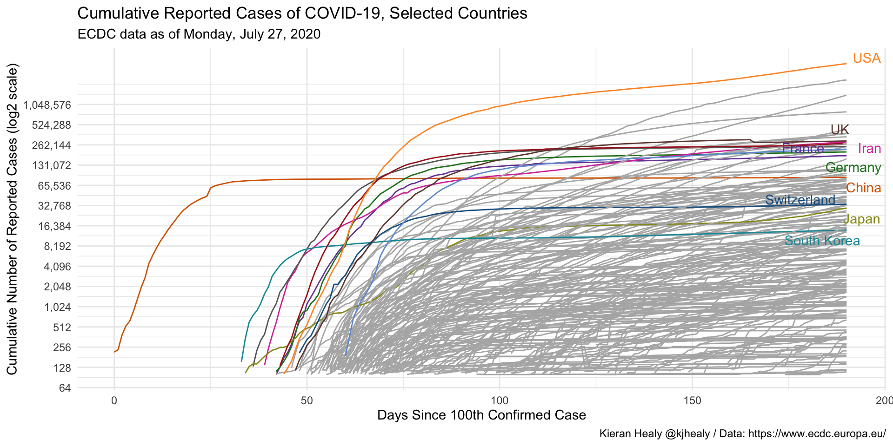
MGMT 47400: Predictive Analytics
Elements of Data Communication
Overview
Six General Principals
- Context Matters
- Visualization Derives From Data
- Less is More: Separate Signal From Noise
- Hierarchy Among Data
- Beauty Counts: Not All Data Are Equally Important
- Telling Your Story
- Posters
The Forest and the Trees
The Forest and the Trees
We have explored many implementation details in recent days, focusing on individual aspects of each analysis.
Today, we want to take a step back to think less about the detail and more about the process.
After all, every data analysis has a purpose. How can we achieve it more effectively?
Essential Elements of Data Communication
Let’s break down the data communication process into six general principles:
- Context Matters
- Visualization Derives From Data
- Less is More: Separate Signal From Noise
- Hierarchy Among Data
- Beauty Counts: Not All Data Are Equally Important
- Telling Your Story
Context Matters
Context
Every analysis has a goal and an audience.
It’s important to separate data exploration from the final analysis. Don’t fall into the temptation of showing everything you did.
Adapt the report to your audience. Decision-makers aren’t always interested in execution details.
So what? Keep a specific learning objective in mind. It will guide which information is relevant for your report.
Isolated numbers don’t tell us much. To make evidence-based decisions, it’s necessary to establish an appropriate basis for comparison for the goal of your report.
Context Can Come from New Information…
…or Reinforce Existing Information
Visualization derives from data
Choosing the Chart
What type of data?
How many dimensions?
Most reports are consumed in 2D media. Showing more than that can confuse the reader.
Be careful with scales!
Use graphs instead of tables!
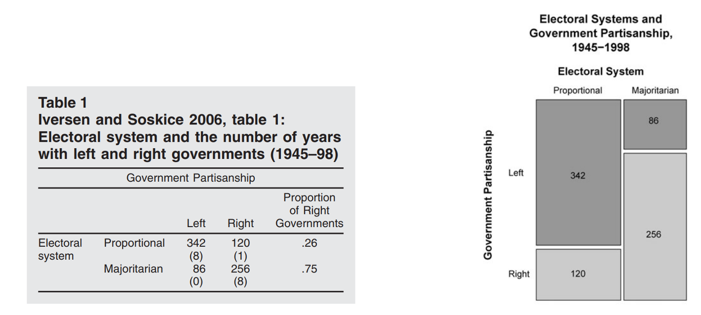
Use graphs instead of tables!
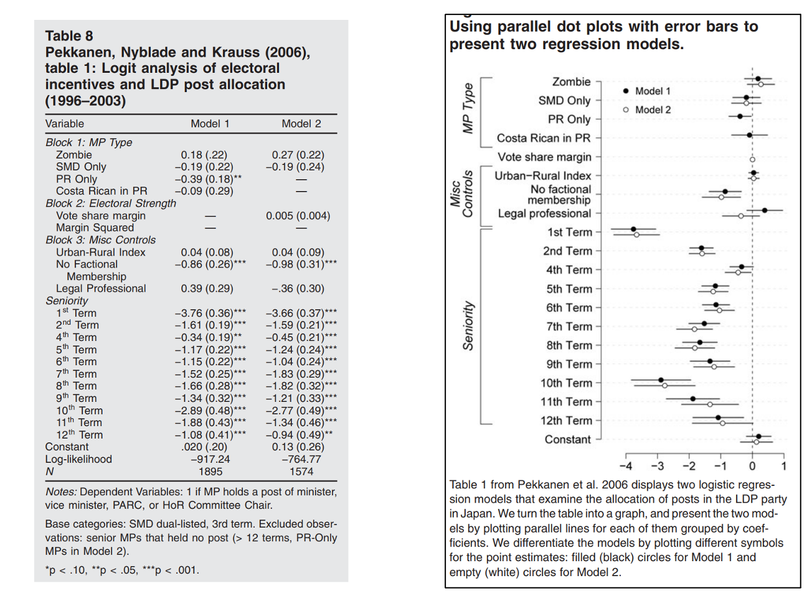
Scales Can Be Misleading
Avoid Dual Axes
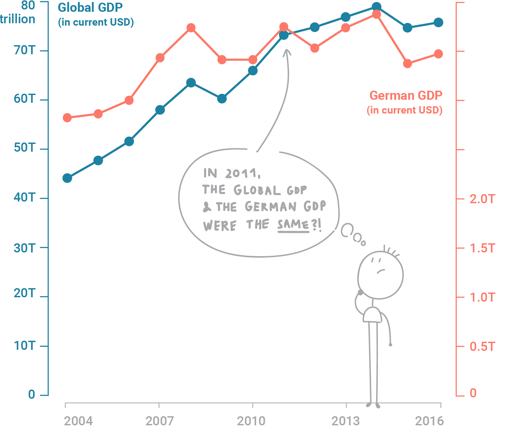
Or Triple Axes!
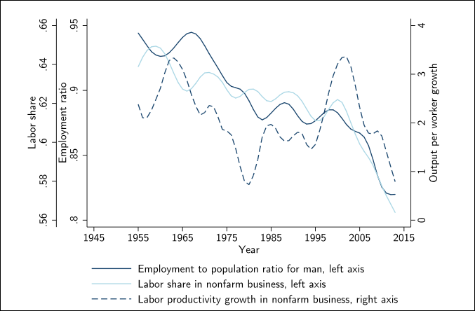
Fewer Pie Charts…

What?!

Oof
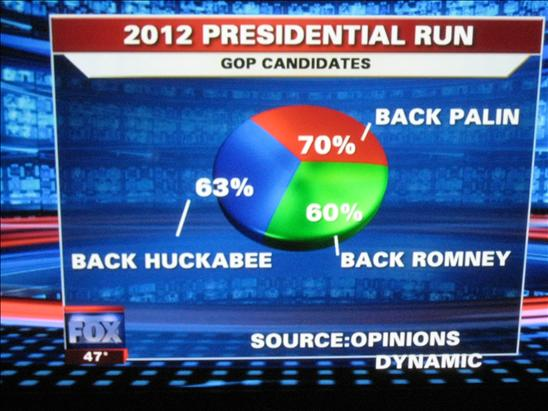
Check Potential Ideas! The Python or R Graph Galleries
Less is More
Separate Signal From Noise
Eliminating Noise
The more information in your visualization, the greater the cognitive load.
Your objective must be to reduce your audience cognitive costs.
Data-Ink Ratio Formula
\[ \text{Data-Ink Ratio} = \frac{\text{Data-Ink}}{\text{Total ink used to print the graphic}} \]
Data-Ink Ratio
Your objective must be to reduce your audience cognitive costs.
Step-by-Step Cleanup
Eliminating the Border
Cleaning the Grids
Removing the Points
Processing the Axes
Adjusting the Label
Adjusting Colors
Before and After
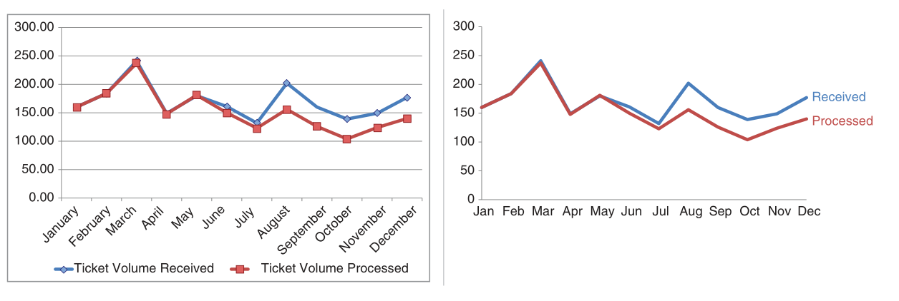
Hierarchy Among Data
Count the Number 3s
Count the Number 3s
Ways to Draw Attention
Highlighting with Colors
Returning to Our Example
Returning to Our Example
Use Colors Strategically
Beauty Counts
Not All Data Are Equally Important
Emphasizing the Main Point
Emphasizing the Main Point
Telling Your Story
Bringing It All Together
Let’s tell a story starting from the chart below, making step-by-step adaptations we’ve discussed. What is it telling you?
Bringing It All Together
Bringing It All Together
Bringing It All Together
Bringing It All Together
Final Narrative
Final Narrative
Final Narrative
Final Narrative
Final Narrative
Final Narrative
Final Narrative
Final Narrative
Before and After
Applications
COVID-19 Evolution
Moving Average
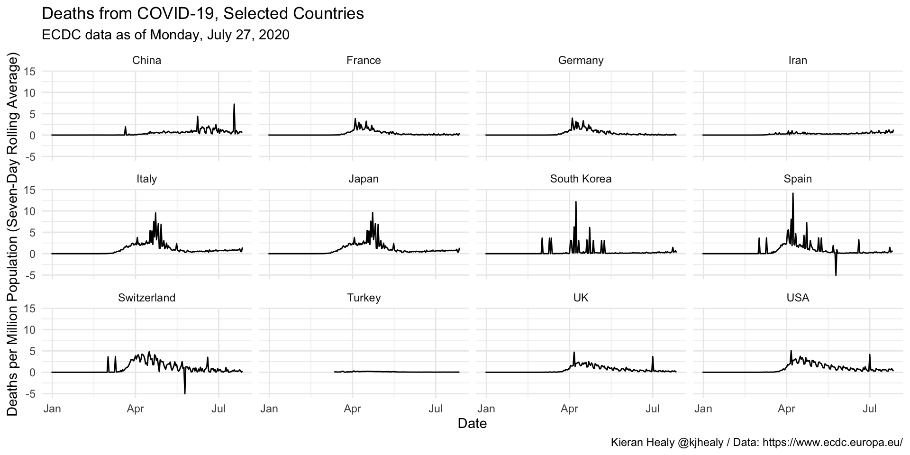
Deaths in New York
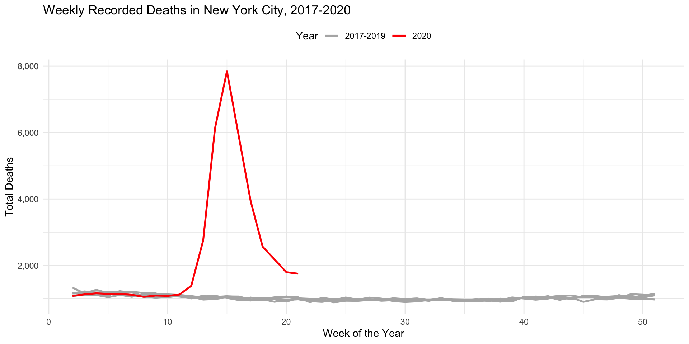
Additional Material
Poster
Why a Poster Presentation?
Showcases your work
Organizes your ideas and results
Is visually appealing
Encourages interactive discussion
Demonstrates your mastery of predictive analytics concepts
Designing a Predictive Analytics Poster: Objectives
Communicate key findings and impact of your project
Highlight the predictive approach, methodology, and novel insights
Highlight the business implications and insights
Planning Your Poster: Template and Rubric
Thanks to Professor Matthew A. Lanham for sharing the original version of this template. Checking his personal webpage is highly recommended!
Planning Your Poster: Visual Hierarchy
Provide a visually engaging, easy-to-navigate summary
Always in columns!
Headings: Large and bold to guide the reader
Color & Contrast: Choose a simple palette that highlights main points
Font Size: Text should be legible from ~3 feet away
Flow: Logical reading order from top-left to bottom-right
Planning Your Poster: Layout & Design
Keep It Simple
- Limit text and rely on figures, charts, and bullet points
- Use consistent color schemes, fonts, and alignment
- Use a QR Code to drive your audience to a dashboard or the project webpage
Use of Space
- White space is your friend — avoid clutter
- Group related sections in boxes or areas for clarity
- 60% Graphics / 40% Text
Key Text Guidelines
- Title: ~85–100 pt
- Headings/Subheadings: ~46–55 pt
- Body Text: ~34–38 pt
- Captions: ~26–28 pt
- Should be readble from 3 feet away
Planning Your Poster: Organizing Your Content
- Title & Authors: Clear, concise, and visible
- Abstract/Introduction: One clear and concise paragraph to show why your problem is important and what are the main results.
- Business Problem: What is your project goal?
- Analytics Problem Framing: What you aim to predict or explain and why
- Research Question: Summarise your project in a question you will answer
- Data and EDA: Key variables, data collection.
- Methodology: Modeling approach focusing on the response variable.
- Model Building and Evaluation: Model results clear and appropriately evaluated
- Business Implication: Business validation of model/solution demonstrated. Main findings, performance metrics, interpretation
- Conclusion & Future Work: Wrap-up and potential next steps
- Acknowledgments & References: Recognize collaborators and sources
Designing for Predictive Analytics
Emphasize the Predictive Component
- Model Choice: Clearly state if you used linear regression, random forests, neural networks, etc.
- Metrics: Include accuracy, RMSE, AUC, or other relevant metrics
- Model Interpretation: Highlight key features or coefficients that drove the predictions
Data Visualization Tips
- Use labeled graphs (e.g., bar charts, scatter plots, confusion matrices)
- Show before-and-after comparisons if you performed feature engineering
- Explain the importance of training vs. testing sets (or cross-validation)
Crafting a Clear Narrative
Crafting a Clear Narrative
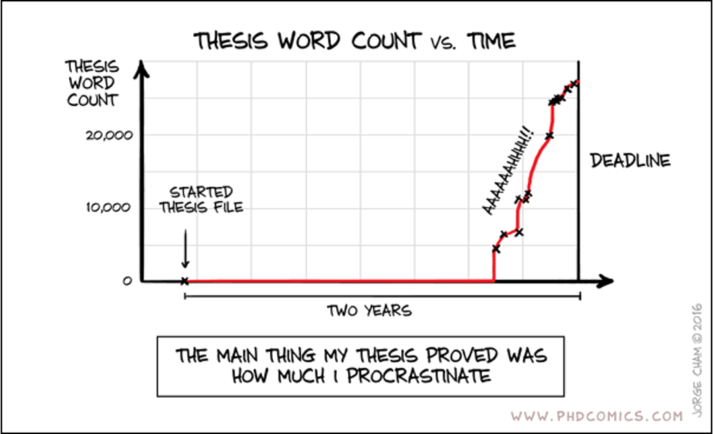
Crafting a Clear Narrative
Introduction & Problem Statement
- Present the real-world problem or question
- Briefly mention why it matters (e.g., business impact, social relevance)
The “So What?” Factor
- Emphasize the value of your predictive findings
- Illustrate how stakeholders can use predictions or insights
Research Design Flow
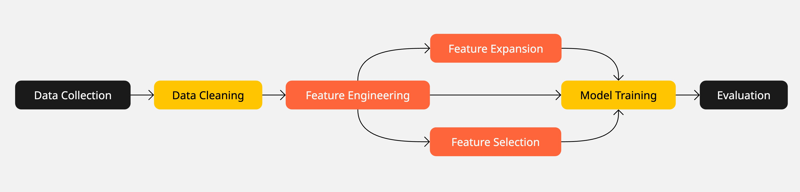
Show each step as a section in your poster or as bullet points under Methodology
Effective Figures and Tables
Charts and Graphs
- Label axes, include legends only if necessary
- Highlight the data that supports your main argument
- Provide short, descriptive captions beneath each figure
Tables
- Keep tables simple, emphasize key results
- Consider whether a chart might be more impactful than a table
Results & Interpretation
Showcase Predictive Performance
- Provide confusion matrices for classification models
- Compare model performance with baseline or benchmark
- Discuss practical implications of the performance metrics
Critical Thinking
- Explain why the model performed well or poorly
- Reflect on limitations (e.g., small dataset, missing variables, etc.)
- Suggest ways to improve performance or replicate your findings
Conclusion & Future Work
Final Touches
Acknowledgments & References
- Recognize supporting faculty, funding sources, and collaborators
- Cite any references (including data sources and libraries) in a consistent format
Proofreading & Practice
Spell-check all text, verify data accuracy, ensure images are clear
Practice explaining your poster to a non-expert
Presenting your Poster
Tips for Presenting Well
Arrive early to set up
Stay close and off to the side
Prepare a 30-second, 90-second, and 2-minute elevator pitches using your poster as a visual guide
Invite questions to spark in-depth discussions
Actively ask questions to your audience
Use your hands to direct your listener to your poster
Prevent you or someone else blocking the poster
Summary
Summary
Main Takeaways from this lecture:
Data Communication Principles:
- Context matters: Tailor your analysis to the audience and goal.
- Focus on the story: Highlight insights, not the process.
- Beauty and clarity: Simplify visuals, use appropriate colors, and remove unnecessary elements.
Visualization Best Practices:
- Use graphs instead of tables where possible.
- Avoid misleading scales and excessive dimensions.
- Prioritize hierarchy and emphasize key data points.
Poster:
- Simplicity and clarity win over clutter
- Emphasize the predictive analytics approach and metrics
- Ensure visual impact and logical flow
- Practice delivering a concise overview of your work
Final Message:
- Less is more. Reduce complexity to communicate data effectively.
- Always keep your audience’s decision-making needs at the forefront.